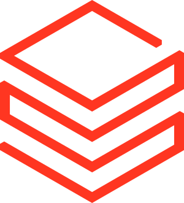

Stop paying for surprise gearbox failures

VentoGuard for Aerion Windkraft AG: predictive drivetrain reliability for 120 turbines
€4.2 Mnet benefit per year
+1.5 pptechnical availability
13 daysearly warning
VentoGuard · Aerion Windkraft AG · Databricks Data Intelligence Platform
The outcome
Turn €11 M of surprises into planned, cheaper repairs
€11.3 Mlost each year to unplanned drivetrain failures today
→
€4.2 Msaved each year, net, at a conservative 75 % catch rate
664turbine-days of production back each year
Failures are flagged 13 days ahead, so a five-week outage becomes a one-week planned swap.
VentoGuard · Aerion Windkraft AG · Databricks Data Intelligence Platform
The problem
Gearboxes and main bearings drive 90 % of the cost
gearbox
€3,424 k
main bearing
€1,886 k
generator bearing
€521 k
pitch hydraulics
€127 k
Cost of unplanned failures by component, last 192 days
€430 kand 5+ weeks down for every surprise gearbox
95.0 %availability at Hunsrück Höhe, against a 97 % target
2–5 weeksof warning signs in SCADA and technicians' notes that nobody combined
VentoGuard · Aerion Windkraft AG · Databricks Data Intelligence Platform
Live demo · what you'll see
Monday 07:00 at the reliability desk
1Risk board3 critical turbines, ranked by €
›
2AI briefdiagnosis + business case
›
3Work orderbooked in one click
›
4Ask Genieplain-language fleet questions
Watch for the moment a €400 k surprise becomes a planned job.
VentoGuard · Aerion Windkraft AG · Databricks Data Intelligence Platform
Live demo · what it means
Four clicks: a five-week surprise became a one-week plan
Risk boardOnly the turbines that matter, ranked by money€806 k avoidable now
AI briefA decision on F03-T07 in minutes≈ €207 k saved
Work orderCrane, spare and crew in a low-wind windowCorrective → planned
GenieAnswers without a BI ticketTime to insight
Run every morning across the fleet: €4.2 M a year.
VentoGuard · Aerion Windkraft AG · Databricks Data Intelligence Platform
Proof
8 of 8 hold-out failures were flagged in advance
7 d
5 d
14 d
14 d
14 d
13 d
12 d
13 d
Days of warning before each failure in the back-test (Aug–Sep, never seen in training)
4 / 4turbines degrading right now are the 4 on today's risk board
81 %of alerts were real failures
75 %catch rate assumed in the value case. Synthetic data, so the pilot measures the real number
VentoGuard · Aerion Windkraft AG · Databricks Data Intelligence Platform
Value · COO
€4.2 M a year net, and €2.7 M even if we catch only half
Avoidable if every failure is planned
€5.8 M
At a 75 % catch rate
€4.4 M
False-alarm inspections
−€194 k
Net benefit per year
€4.2 M
EBITDAless corrective O&M, with crane mobilisation alone ≈ €120 k per gearbox
Revenue+1.5 pp availability protects PPA volumes
Run costserverless and scale-to-zero, measured in the pilot; one avoided gearbox covers it many times
VentoGuard · Aerion Windkraft AG · Databricks Data Intelligence Platform
Value · Head of Asset Management
From firefighting to a planned maintenance calendar
13 daysmatches crane booking and spare-pool lead times
Explainedeach alert names the component and the 3 sensor signals behind it
519 notesGerman and English technician notes now raise risk
Self-servicefleet questions answered by Genie, with the SQL shown
KPIs you're measured on, from governed tables: availability · MTTR · corrective/planned ratio · O&M €/MWh
VentoGuard · Aerion Windkraft AG · Databricks Data Intelligence Platform
How it works
One governed platform, from raw SCADA to the dispatcher's screen
Lakeflowingest SCADA, notes, assets, prices
Unity Cataloggovern, mask, lineage
ML + GenAI14-day risk and AI briefs
Lakebasemillisecond serving and work orders
App + Geniewhere the business works
One Lakeflow Job, daily at 05:00 · deployed as one bundle · open formats (Delta, Postgres, MLflow)
VentoGuard · Aerion Windkraft AG · Databricks Data Intelligence Platform
Trust
Governed data, explainable models, grounded AI
Data quality7,717 bad readings dropped before the model
GDPRtechnician names masked in every tool
Model gateno promotion without passing quality checks
Grounded AIbriefs use only measured facts
Lineageevery number traces back to its raw file
Least privilegethe app sees only what it needs
VentoGuard · Aerion Windkraft AG · Databricks Data Intelligence Platform
The ask
An 8-week pilot on Hunsrück Höhe
Weeks 1–2connect real SCADA and SAP PM
Weeks 3–4retrain and calibrate with your reliability lead
Weeks 5–8live shadow mode on Hunsrück Höhe
Week 8go/no-go on € avoided
Two decisions today① your sponsorship ② access to 24 months of SCADA and CMMS data
VentoGuard · Aerion Windkraft AG · Databricks Data Intelligence Platform
Backup · Q&A
Cost, risk and time to value
CostServerless and scale-to-zero, so no idle cluster. The pilot measures it exactly. One gearbox ≈ €430 k.
Downside caseOnly 50 % caught still gives €2.7 M/yr.
Precision riskThe case assumes 75 %, and shadow mode puts a field verdict on every alert.
Alert fatigueRanked by € at stake. Target ≤ 1 false alarm per 10 turbines per month.
AdoptionThe work order sits on the same screen as the alert. Daily use is a go/no-go criterion.
Time to valueFirst live alerts in week 5, go/no-go in week 8, then the same bundle on all 4 farms.
VentoGuard · Aerion Windkraft AG · Databricks Data Intelligence Platform
Backup · Q&A
Architecture and integration
IngestAuto Loader today. In the pilot: historian exports or Zerobus for SCADA, and Lakeflow Connect for SAP PM.
TransformDeclarative pipeline bronze → silver → gold, with expectations at silver.
ServeGold tables sync to Lakebase Postgres. Work orders are transactional, in the app's own schema.
Write-backWork orders go to SAP PM through its API. SAP stays the system of record.
Scale≈ 3.3 M rows of 10-minute SCADA on serverless. More farms is configuration, not a rebuild.
FreshnessDaily fits the 14-day horizon. The sync can switch to continuous.
VentoGuard · Aerion Windkraft AG · Databricks Data Intelligence Platform
Backup · Q&A
Data quality, model validation, AI guard-rails
Data qualityExpectations dropped 7,717 impossible readings. Features are fleet-relative, so weather isn't mistaken for failure.
ValidationTime split: trained before August, tested Aug–Sep, so no leakage.
Model gatePR-AUC ≥ 0.30 and ≥ 60 % caught ≥ 3 days ahead, or no @champion.
LifecycleMLflow tracks every run. The pilot adds drift monitoring and a monthly retrain.
Grounded AIClaude via ai_query, using only the score, residuals and notes. Tagged ai_generated.
SecurityUC grants, column mask on names, and a least-privilege app service principal.
VentoGuard · Aerion Windkraft AG · Databricks Data Intelligence Platform